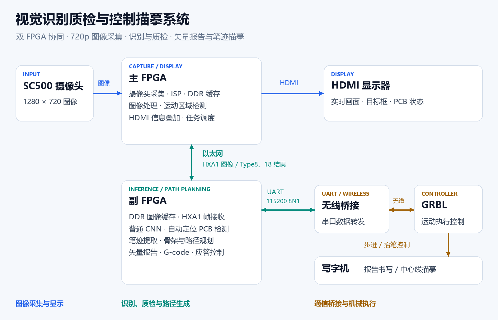
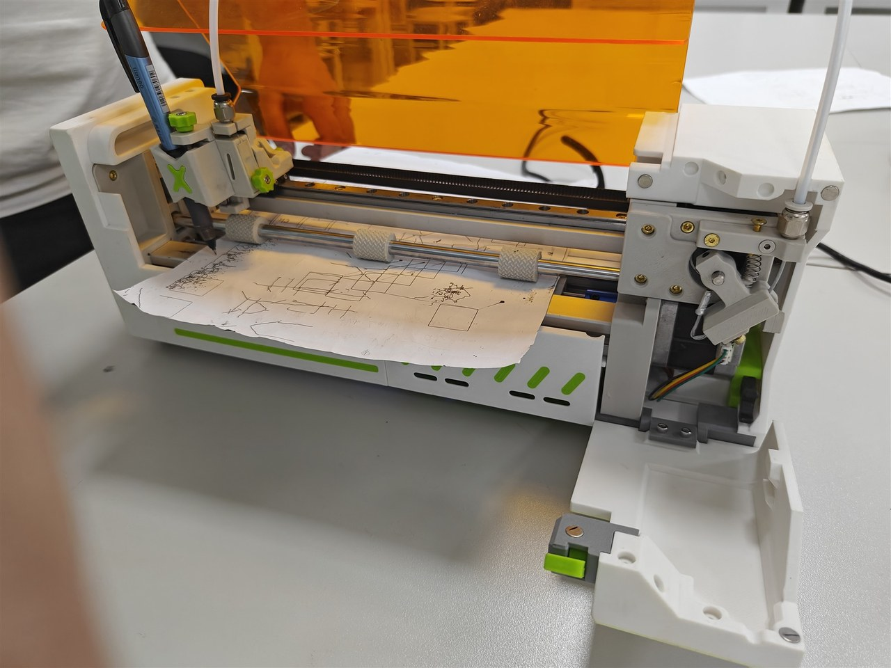

视觉识别质检与控制描摹系统 · 2026-11-18
视觉识别质检与控制描摹系统
2026-11-18 · 四目标坐标显示 · 空闲串口保护 · 连续矢量书写
构建通过；实板 NOT_RUN。
配套 bit · 源工程 · 说明 · SHA256 校验
完整解压；先运行 python -B verify_package.py。开发前运行 prepare_projects.py，生成新副本。
系统结构与执行平台（历史开发照片）


版本功能
# 版本功能
主板：`main_cnn_multicoord_20261118`；副板：`secondary_plotter_idle_preflight_20261118`（r2 成功构建）。
- 普通 CNN 最多四个目标分别显示名称、分数和原图中心点 X/Y；名称和坐标使用同一槽位，一起随识别显示开关隐藏。坐标是 1280×720 原图像素，不是机器毫米。原始分数不是正确概率；CNN 模式仍隐藏写字操作面板。
- PCB 继续使用 CCL 自动定位及 96×96 Y8、C4/C4 二分类；主板 KEY4 每次按下识别一次，长按不连拍。左下显示 PASS/FAIL/REVIEW 等状态。不是现场模板学习或精确缺陷分割。
- 保留原图及图像风格、曝光/白平衡、运动区域检测和视频延迟显示。当前风格环为 16 档，保留原编号 0–4、6–14、17、18；5/15/16 已退出循环，不能按历史说明称为当前可选 19 档。卡通为四档量化及边缘阈值 20。
- 文档复制只保留原图中央宽高各 80%：x128..1151、y72..647；外围留空，不放大或拉伸。保留 320×180 有效网格、4×4 原像素判定、骨架、路径规划和固定脏污补偿。不是 OCR，不保证标准笔顺。
- KEY1 可在普通 CNN 后台推理时书写已确认的结果快照，后续识别不覆盖正在写的名称、分数和中心坐标。PCB 和文档仍需当前有效结果/准备路径。
- KEY2 不再因普通 CNN 的后台 busy 丢弃按键。短按画一个方框，正常结束自动换行；长按至少 2 秒退纸。
- 尚未建立普通命令会话时，启动噪声或迟到的停止状态可重新执行完整握手。安全空闲每 5 秒仅发状态查询；满足已确认 Idle 且之后无新命令的条件时，可重新确认接收帧错误，不永久卡住准入。
- Alarm、移动/未知启动状态、活动命令中的故障保留显式恢复锁。不自动解锁、回零或重发运动指令。实际长时间空闲故障仍需 UART 实拍/记录验证。
- CNN/PCB/KEY2 及文档落笔 XY 进给请求 5000 mm/min，空走 7000，Z 1200；落笔等待 100 ms。实际速度受控制器和机械限制。
- 单线矢量字体，同一字形精确相连的段，包括转角，连续落笔；分离笔画和字符之间仍抬笔。线段、文字、坐标和换行内容不变。
- 自动换行、滚筒上退纸保留，有限 A4 纸面额度关闭，操作者负责剩余纸面及避免覆盖。机器数值范围检查仍保留。
- 已接受任务由副板持有；以太网断开不自动取消或重放。GRBL 正常任务以最后一行 ok 完成逻辑任务，维护及安全恢复仍需新鲜 Idle。
接线与操作
# 接线与操作
摄像头接主板，主板 HDMI 接显示器，主副板以太网互连。副板 UART 接运行 GRBL 的写字控制器或已配置的串口桥接模块。
| 副板信号 | 管脚 | 说明 |
| --- | --- | --- |
| UART TX | C18（J1-1） | 接对端 RX |
| UART RX | D15（J1-2） | 接对端 TX |
| LINK_READY | E12（J1-3） | 兼容保留；当前不以该电平判定 GRBL 安全就绪 |
| GND | J1-30 | 共地 |
| KEY1 / KEY2 / KEY3 / KEY4 | D5 / A9 / B9 / C7 | 低电平有效 |
UART：115200、8N1、3.3 V。其余引脚以各板 ADC 为准。
## 主板
SW4:SW3：00 普通 CNN，01 PCB，10 文档，11 保留。
SW2 控制识别/阶段信息叠加；普通 CNN 的名称、分数、坐标一起开关。板间网络固定连接副板。SW1 控制运动叠加。
KEY2 切换显示风格，KEY3 恢复原图。PCB 模式主板 KEY4 每次稳定按下触发一次，松开再按才能触发下一次。PCB 判定在画面左下角。
## 副板
| 按键 | 操作 |
| --- | --- |
| KEY1 短按 | 写当前有效 CNN/PCB 快照；文档已准备时提交描摹 |
| KEY1 长按 | 仅在待上纸确认状态执行上纸确认；不是连续写字 |
| KEY2 短按 | 画一个固定方框，然后自动换行 |
| KEY2 长按≥2秒 | 执行退纸；松开不补画方框 |
| KEY3 | 复位整个副板应用；外部 GRBL 不因此自动复位或停稳 |
| KEY4 | 当前任务停止/重置，按原 GRBL 暂停、清场和状态确认流程处理 |
烧录 `01_bit/` 中对应两板文件。先校准 GRBL 工作坐标、轴向、笔升降及机械行程。首次启动等待串口握手；上纸待确认时放新纸并长按副板 KEY1 确认。CNN/PCB 识别后短按副板 KEY1 写报告；文档等待路径准备好后再按 KEY1。
换纸时长按 KEY2，退纸完成后人工摆新纸，再长按 KEY1 确认。本版有限纸面额度已关闭，不会替操作者判断剩余纸长；仍保留自动换行和数值越界检查。
正常任务最后的 ok 仅表示控制器接收完成，不保证机械已停止。上纸、退纸和恢复仍等待新鲜状态。Alarm、Reset、活动命令应答缺失等情况不能通过重发运动命令解决；先检查显示错误及串口状态，再按现有恢复流程处理。
首次及长时间空闲后，分别验证 KEY1/KEY2、CNN/PCB 报告、文档、断网续写和 KEY4 停止；当前配对实板状态 NOT_RUN。
工程打开与开发
# 工程打开与开发
建议解压到短英文目录，使用 Windows、Python 3.11+ 和 Tang Dynasty Release 2026.1 SP2 / 6.2.200067。器件 PH1P35MDG324、speed -3。工具及合法许可证自行安装。
1. 在包根目录运行 `python -B verify_package.py`；不需要 FPGA 工具。
2. 运行 `python -B prepare_projects.py D:/fpga/dev_multicoord_idle`。目标目录必须不存在，且位于交付包外。
3. 用 TD 打开新开发副本中的工程：
主板：`main/01_rtl/imgq_gain_m/main/td_project_display_noise_v8/camera_to_dsi_display_720p60_cnn_multibox.al`。
副板：`secondary/runs/syn_1/secondary_cnn_multibox.al`；布局布线配置在 `secondary/runs/phy_1/`。
4. 新目录根生成六个 Tcl 包装入口，分别对应主/副板 synth、place、route。用 TD 命令行按此顺序执行对应脚本；脚本先切到正确工作目录。新构建覆盖的是新副本，原交付包不变。
5. 新构建必须重新做时序、资源、CDC/FIFO/DDR、DRC、只读重导入及 bitgen 验收。历史 PASS 不能代替新结果。本包不自动为新构建执行 bitgen。
原始 AL/PRJ、RTL、权重、约束和最终报告保留原字节；原始报告里的 D/E 盘地址是历史证据。准备脚本仅在新开发副本中更改工程根路径并添加等字节 ROM 别名，记录在 `RELOCATION_REPORT.json`。
副板 `main/` 为其自身 DDR、PLL、网络 IP 依赖，不是另一个主板工程，不能删除。`model/`、`runs/model/` 和 `01_rtl/model/` 中的模型别名均按冻结依赖保留。
仿真材料见每板 tests、02_sim、reports 及 tools。使用包根 `run_smoke.py --sim-bin <ModelSim目录> --output <新目录>` 可运行可搬移的坐标/像素流水、启动 UART 和空闲 UART 定向回归；沿用本机 LM_LICENSE_FILE/MGLS_LICENSE_FILE，不内置许可证。历史完整回归脚本部分仍带本机路径和旧对照组要求，原样作为证据保留，使用前需适配；不能把定向 smoke 当作全部 19 组验收。
本包不含 TD 成功构建数据库（.db）、仿真编译库、波形或工具本体；原始最终时序、资源、DRC、CDC/FIFO/DDR、reimport、bitgen 日志与哈希均保留，省略清单见 `04_verification/EVIDENCE_SCOPE.json`。接收者机器上的完整重新综合/布线尚未执行。
验证与限制
# 验证与限制
| 板卡 | Setup WNS | Hold WNS | TNS | Slice | ERAM | DSP |
| --- | --- | --- | --- | --- | --- | --- |
| 主板 | +0.314 ns | +0.020 ns | 0 | 93.38% | 89.81% | 92.50% |
| 副板 | +0.006 ns | +0.020 ns | 0 | 89.99% | 78.70% | 40.00% |
最终构建通过 lint/RTL 回归、综合、布局布线、最终物理签核、只读 reimport 和 bitgen。副板当前功能验收为 19 组；主板包含四目标坐标、逐像素流水、显示状态及协议回归。以每板 `artifacts/RELEASE_REPORT.json` 为最终摘要，`evidence/build/` 保留实际签核记录。
副板 setup 仅 6 ps 余量，主板 ERAM 已达 89.81%。工具报告门槛通过不代表温压、长时间运行或真实机械验收。厂商加密 DDR 警告和既有诊断原样保留，不称为零警告构建；CDC/FIFO/DDR 的静态/行为证据不等于实板物理验证。
连续字模对照保持有向绘制线段与顺序，12 组 CNN/PCB 报告的落笔次数和命令数减少，详见副板 `reports/FONT_FLOW_SUMMARY.md`。实际机械书写质量、耗时和长时间空闲恢复仍为 NOT_RUN。
需要实机检查：上电后首个 KEY1/KEY2，长时间空闲后 KEY1/KEY2，四目标坐标对应关系与显示开关，CNN/PCB 名称和分数，文档比例、自动换行、上退纸、KEY4 停止、断网任务保持，以及 Alarm/活动命令故障的显式恢复。
本次整理检查源码/bit 身份、文件完整性、解压、迁移和定向 smoke；未重跑 FPGA 综合/布线，没有修改 RTL、权重、约束或生成新 bit。交付中历史失败试验与中间准备结果均不替代最终发布记录。